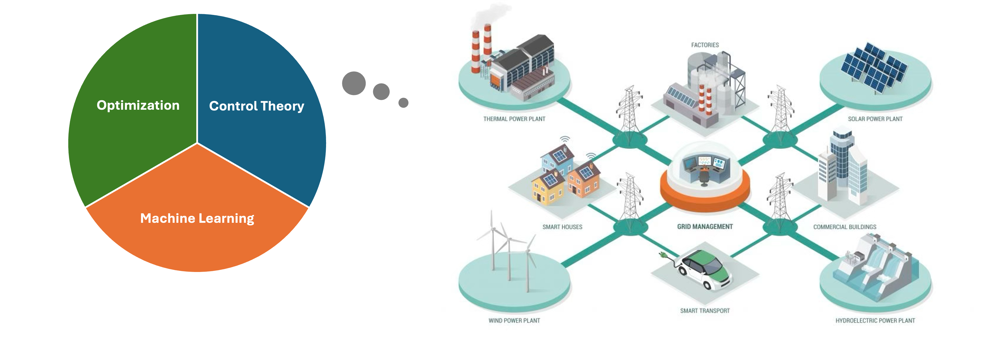

Short Biography
I am currently a final-year Ph.D. Candidate in Engineering Sciences (Mechanical Engineering) at University of California, San Diego, advised by Prof. Jorge Cortés. During my Ph.D., I also work closely with Prof. Yuanyuan Shi (UCSD), Dr. Guido Cavraro (NREL), and Prof. Changhong Zhao (CUHK).
Prior to that, I was enrolled in the successive undergraduate and postgraduate program at the Honors School of Harbin Institute of Technology, where I received the B.S. and M.S. degrees in Control Science and Engineering under the supervision of Prof. Ligang Wu.
Recent Updates/Upcoming Events
[03/2025] Paper sent to CDC'25, where we provide the fundamental lemma for nonlinear systems admit Koopman bilinear realization, see here.
[03/2025] Paper sent to Transactions on Smart Grid, where we close our series of works on provably stable voltage control with a unified framework, see here.
[Highlight] I am on the 25-26 academic job market!
Research Interests
Intersection of Control, Optimization and Machine Learning, as well as their applications to Sustainable Energy Systems.

Journal Publications
Z. Yuan, J. Feng, Y. Shi, and J. Cortés, “Stability constrained voltage control in distribution grids with arbitrary communication infrastructure,” IEEE Transactions on Smart Grid, 2025. Submitted. [Preprint]
Z. Yuan, G. Cavraro, A. S. Zamzam, and J. Cortés, “Unsupervised learning for equitable DER control,” Electric Power Systems Research, 234: 110634, 2024. [ScienceDirect, arXiv] (Joint w/ PSCC'24)
Z. Sun#, Z. Yuan#, C. Zhao, and J. Cortés, “Learning decentralized frequency controllers for energy storage systems,” IEEE Control Systems Letters, 7: 3459-3464, 2023. [IEEE Xplore] (Joint w/ ACC'24)
Z. Yuan, G. Cavraro, and J. Cortés, “Constraints on OPF surrogates for learning stable local Volt/Var controllers,” IEEE Control Systems Letters, 7: 2533-2538, 2023. [IEEE Xplore, arXiv] (Joint w/ CDC'23)
Z. Yuan, G. Cavraro, M. K. Singh, and J. Cortés, “Learning provably stable local Volt/Var controllers for efficient network operation,” IEEE Transactions on Power Systems, 39(1): 2066-2079, 2024. [IEEE Xplore, arXiv, CDC'22]
Z. Yuan, C. Zhao, and J. Cortés, “Reinforcement learning for distributed transient frequency control with stability and safety guarantees,” Systems & Control Letters, 185: 105753, 2024. [ScienceDirect, arXiv]
Z. Yuan and J. Cortés, “Data-driven optimal control of bilinear systems,” IEEE Control Systems Letters, 6: 2479-2484, 2022. [IEEE Xplore, arXiv]
Z. Yuan, Y. Xiong, G. Sun, J. Liu, and L. Wu, “Event-triggered quantized communication-based consensus in multi-agent systems via sliding mode,” IEEE Transactions on Cybernetics, 52(5): 3925-3935, 2022. [IEEE Xplore]
Z. Yuan, Y. Tian, Y. Yin, S. Wang, J. Liu, and L. Wu, “Trajectory tracking control of a four Mecanum wheeled mobile platform: An ESO-based sliding mode approach,” IET Control Theory & Applications, 14(3): 415-426, 2020. [Wiley]
Professional Services
Reviewer for Journals & Conferences
IEEE Transactions on Automatic Control; IEEE Transactions on Power Systems; IEEE Transactions on Network Science and Engineering; IEEE Transactions on Cybernetics; IEEE Control Systems Letters; IEEE Robotics and Automation Letters; Systems & Control Letters; International Journal of Robust and Nonlinear Control; Electric Power Systems Research; IET Control Theory & Applications, etc.
IEEE Conference on Decision and Control (CDC); American Control Conference (ACC); IEEE Conference on Control Technology and Applications (CCTA); Power Systems Computation Conference (PSCC); Learning for Dynamics & Control Conference (L4DC), etc.
Professional Memberships
|